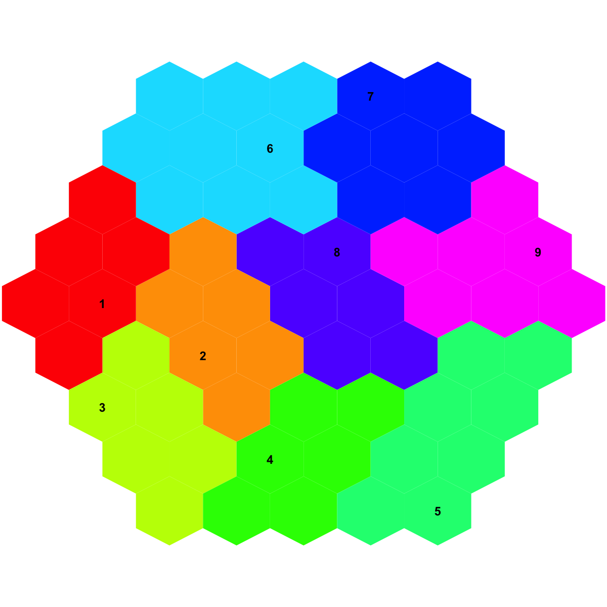

sDmatCluster is supposed to obtain clusters from a
grid map. It returns an object of class "sBase".
sDmatCluster(sMap, which_neigh = 1, distMeasure = c("median", "mean", "min", "max"),
clusterLinkage = c("average", "complete", "single", "bmh"))
an object of class "sBase", a list with following components:
seeds: the vector to
store cluster seeds, i.e., a list of local minima (in 2D
output space) of distance matrix (in input space). They
are represented by the indexes of hexagons/rectangles
bases: the vector with the length of nHex to
store the cluster memberships/bases, where nHex is the
total number of hexagons/rectanges in the grid
call: the call that produced this result The first item in the return "seeds" is the first cluster, whose memberships are those in the return "bases" that equals 1. The same relationship is held for the second item, and so on
# 1) generate an iid normal random matrix of 100x10 data <- matrix( rnorm(100*10,mean=0,sd=1), nrow=100, ncol=10) # 2) get trained using by default setup sMap <- sPipeline(data=data)Start at 2014-03-20 18:25:41 First, define topology of a map grid... Second, initialise the codebook matrix given a topology and input data... Third, get training at the rough stage... Fourth, get training at the finetune stage... Next, identify the best-matching hexagon/rectangle for the input data... Finally, append the response data (hits and mqe) into the sMap object... Below are the summaries of the training results: dimension of input data: 100x10 xy-dimension of map grid: xdim=9, ydim=9 grid lattice: hexa grid shape: suprahex dimension of grid coord: 61x2 initialisation method: linear dimension of codebook matrix: 61x10 mean quantization error: 4.87294660591056 Below are the details of trainology: training algorithm: batch alpha type: invert training neighborhood kernel: gaussian trainlength (x input data length): 7 at rough stage; 25 at finetune stage radius (at rough stage): from 3 to 1 radius (at finetune stage): from 1 to 1 End at 2014-03-20 18:25:41 Runtime in total is: 0 secs# 3) partition the grid map into clusters based on different criteria # 3a) based on "bmh" criterion # sBase <- sDmatCluster(sMap=sMap, which_neigh=1, distMeasure="median", clusterLinkage="bmh") # 3b) using region-growing algorithm with linkage "average" sBase <- sDmatCluster(sMap=sMap, which_neigh=1, distMeasure="median", clusterLinkage="average") # 4) visualise clusters/bases partitioned from the sMap visDmatCluster(sMap,sBase)
sPipeline, sDmatMinima,
sBMH, sNeighDirect,
sDistance, visDmatCluster
Fang H, Gough J. (2014) supraHex: an R/Bioconductor package for tabular omics data analysis using a supra-hexagonal map. Biochemical and Biophysical Research Communications, 443(1), 285-289. http://dx.doi.org/10.1016/j.bbrc.2013.11.103, PMID: 24309102
){kind=link}